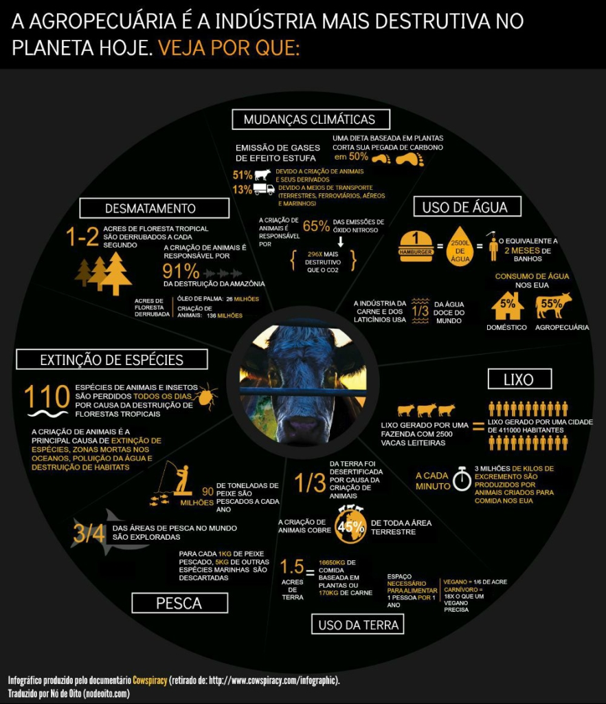

Uma página feita pra quem quer diminuir o consumo de alimentos de origem animal!

Esta página tem como objetivo trazer informações e dicas úteis para quem está pensando em reduzir o consumo de derivados de animais na alimentação. Aqui você encontra receitas e indicações de filmes, documentários e canais no youtube sobre o assunto.
Quais são os dados de consumo de carne no Brasil?
Nos últimos 50 anos, o consumo de carne no mundo aumentou de forma acelerada. Hoje, a produção é quase cinco vezes maior do que no começo da década de 1960. O salto foi de 70 milhões de toneladas para mais de 330 milhões em 2017.
Um brasileiro come, em média, 35 quilos de carne bovina por ano, o que coloca o país na quarta posição do ranking de consumo desse tipo de proteína. Além disso, um brasileiro médio come também 11 quilos de porco e 32 quilos de frango todo ano.
Por que é tão importante reduzir o consumo de alimentos derivados de animais?

Desta maneira, para conter uma crise alimentar e uma catástrofe climática, é importante reduzir a ingestão de proteína de origem animal. Mesmo com o crescente número de pessoas cortando a carne e outros derivados de animais da alimentação, reduzir o consumo também é válido, além de ser viável e simples para a maioria das pessoas. Nesse cenário, o relatório do Instituto de Recursos Mundiais (WRI) aponta que reduzir em 40% a ingestão de carne já ajuda a combater esses impactos.
As alternativas que o estudo indica para não piorar o quadro do aquecimento global ou gerar desequilíbrio alimentar são praticar o consumo consciente, elevar a produção por hectare e acabar com o desperdício de alimentos, que atinge um terço da população mundial.